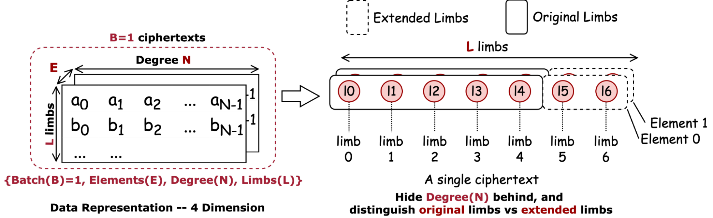

Chapter 1: Introduction to CKKS HE
What is HE and where is it used?
Homomorphic Encryption (HE) defines a scheme to encrypt data so that computation (such as multiplication and addition) can be directly performed in the encrypted format. This is known as encrypted computation.
- Privacy-Preserving AI: HE is primarily used for sensitive applications like healthcare (protecting genomic data), finance (analyzing investment data), and government.
- Security Foundation: HE is built on lattice-based cryptography, which is considered "post-quantum"—meaning it is secure even against future quantum computers.
- The CKKS Scheme: This specific version of HE is designed for approximate arithmetic, making it perfect for real-world tasks like AI inference and signal processing where slight rounding errors are acceptable.
How is data represented after encryption?
To encrypt a list of numbers (a vector), we go through a process called Packing.
- Ciphertext Structure: A single ciphertext contains a pair of two high-precision polynomials of degree $N$.
- Slots and Packing: Each pair of polynomials can hold $N/2$ data elements, termed as "slots". The specific way individual data is placed into these slots is called "packing" or "layout".
- High Precision: Each coefficient in these polynomials can be thousands of bits long to ensure security, which is much larger than the 32-bit or 64-bit numbers standard computers use.
Example: As shown in the illustration below, for $N=65536$, a vector of 32,768 data points is encoded into an $N$-degree polynomial and then encrypted into two polynomials of the same degree.
The SIMD Mindset: Once data is encrypted, it behaves like a SIMD (Single Instruction, Multiple Data) machine with a massive vector length. If you add two ciphertexts, the computer adds all $N/2$ slots at once. This makes HE-based encrypted processing exactly work like a SIMD vectorized hardware, such as AVX512. And HE is analogous to an AVX<N/2>, e.g., AVX32768 for N=65536.
Allowed Operations:
- Addition: Slot-wise addition of two ciphertexts.
- Multiplication: Slot-wise multiplication. Note: This is computationally "expensive" and requires extra steps like Relinearization and Rescaling to manage noise and data size.
- Rotation: Moves all data in the slots left or right (e.g., move every number one slot to the right).
Such restriction reformulates the efficiency optimization problem as a problem of how to convert application into a sequence of SIMD Addition, SIMD Multiplication and SIMD rotation of a very-long vector, to minimize overall costs.
Chapter 2: The HE Compilation Stack
To tackle this entire problem structurally, HE acceleration techniques, particularly for CKKS encryption, could be formally categorized into five distinct layers, including Packing, Mapping, Scheduling, Decomposing and Binding.
- Packing defines how data is organized within ciphertext slots. Specifically, a CKKS ciphertext operates like a vector of SIMD units, encoding multiple data per ciphertext and enforcing lock-step operator for all encoded data. Thus, operators in original applications initially designed for element-wise computations must be transformed into SIMD-compatible, HE-specific Privacy-Preserving Operators (PP-Ops).
- Mapping translates PP-Ops into sequences of fundamental HE operators. Optimal mapping seeks maximum arithmetic intensity, data reuse, and parallelism while minimizing computational and memory overhead to reduce latency.
- Scheduling determines how HE kernels are scheduled for each HE operator (e.g., addition, multiplication, rotation, rescale, bootstrapping).
- Decomposing specifies arithmetic and memory operations on individual ciphertexts for HE kernels.
- Binding: Arithmetic and memory operations are translated into hardware-specific programming interfaces (e.g. JAX for TPU), or low-level hardware ISAs (e.g. SIMD ISA for TPU).
Chapter 3: Mathematical Foundations & Data Representation
Standard hardware units (like 32-bit CPUs or 8-bit TPU MXUs) cannot natively support thousand-bit coefficients. We solve this through precision lowering and tensor representation.
Mathematical Basics: Fields and Rings
To understand HE from a computation perspective, we look at how numbers are constrained:
- Finite Fields (Coefficients): Each polynomial coefficient is an integer in a finite field, meaning there are limited choices of integer values. For example, a modulus $q=14$ gives 14 choices (0–13). If a value overflows, a modular reduction brings it back into range.
- Polynomial Rings: Putting all coefficients together forms a ring, which has a limited number of degrees. When the degree overflows, a modular reduction by a polynomial modulus (e.g., $\Phi(x) = x^{16} + 1$) is used to bring it back.
Precision Lowering (thousands to 32 or to 8)
Standard hardware cannot process 1000-bit integers directly. We use two mathematical "tricks" to solve this:
- Residue Number System (RNS): We break one "giant" polynomial into $L$ smaller polynomials called Limbs (or Towers). Each limb uses smaller coefficients (e.g., 32-bit or 64-bit) that hardware natively supports.
- Digit Decomposition: For even smaller hardware units (like 8-bit units in a TPU), we further break these limbs into "chunks" or "bytes".
Data Representation (4D or 5D Tensor)
After lowering the precision using techniques like the Residue Number System (RNS), we can represent ciphertext as a multi-dimensional tensor.
- 4D Tensor: Each ciphertext is represented by a 4D vector indexed by {Batch (B), Elements (E), Degree (N), Limbs (L)}. In this representation, each specific combination of indices specifies a single coefficient.
- 5D Tensor: If each individual byte of a coefficient must be explicitly represented (for low-precision hardware like 8-bit units), the data becomes a 5D tensor: {Batch (B), Elements (E), Degree (N), Limbs (L), Bytes (K)}.
All operations do not alter the value of degree, hence we could just hide it in the visualization for simplicity. Therefore, we simplify it into representing each limb as a circle, as shown below.
Acceleration with NTT
Multiplying polynomials naively is expensive ($O(N^2)$). We use the Number-Theoretic Transform (NTT) to transform coefficients into the evaluation domain, where multiplication becomes element-wise.
- Blue Circles: Represent the coefficient domain.
- Red Circles: Represent the evaluation domain.
Chapter 4: Detailed Computational Flow
HE operators require complex sequences of kernels to manage the mathematical properties of the ciphertext.
HE Multiplication
HE multiplication is not a single step; it involves a sequence of four stages to maintain the ciphertext's integrity and manage noise:
- Rescale: Adjusts the scale of the fixed-point numbers after multiplication.
- Ciphertext Multiplication: Multiplies the polynomials, which temporarily increases the number of elements (from 2 elements to 3).
- Key Switch (Relinearization): Converts the 3-element result back into a standard 2-element ciphertext.
- Basis Conversion (Modulus Down): Lowers the modulus to manage noise growth.
HE Rotation
HE Rotation moves all data in the slots in the same direction with the same distance. This requires a specialized procedure involving Digit Decomposition, a KeySwitch Core, and finally AutoMorphism (Degree-wise Shuffling) to physically move the data within the polynomial structure.